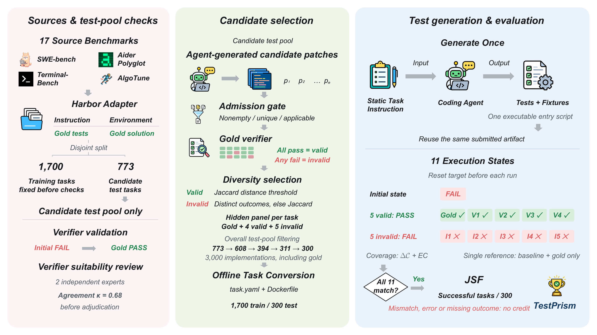

Joint Success Function
A strict success requires all three conditions at once.
Failinitial∧Acceptall valid∧Rejectall invalid
A benchmark for reliable test generation
TestPrism asks whether agent-written tests accept valid alternatives, reject incorrect implementations, and fail on the initial program state.
The benchmark
A strict success requires all three conditions at once.
Each task pairs the reference with four valid alternatives and five invalid implementations.
Seventeen benchmark sources span repository maintenance, algorithms, and performance optimization.
Main results
Click a metric to sort. Higher is better.
| Rank | Model |
|---|
Reported percentages reproduce the paper's main test-set table. The full study evaluates 14 coding-agent configurations across six model families.
Our agent
Heterogeneous test–repair synthesis, peer cross validation, and recursive self improvement help generated tests generalize across implementations.
Evaluation pipeline

Anonymous artifact
Code, setup instructions, and integrity checks are available now. The verified tasks and frozen patch sets are distributed separately.